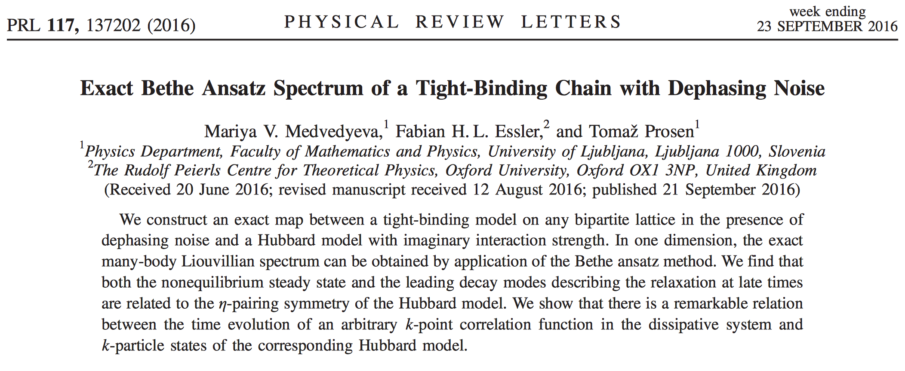

The Model

Atoms in a cavity

Model Hamiltonian
- \displaystyle H = H_\text{S} + H_\text{B} + H_\text{int} \displaystyle H_\text{int} = \sum_j s_j B_j
Bloch–Redfeld equations
\displaystyle \begin{aligned} \dot \rho = i\left[\rho, H_\text{S}\right] + \sum_{j,k}\left[-s_j q_{jk}\rho + q_{jk} \rho s_j-\rho q_{jk} s_j + s_j\rho q_{jk} \right] \end{aligned} \displaystyle q_{jk} = \frac{1}{2}\langle n\rvert s_l\lvert m\rangle g_{jk}(\omega_m-\omega_n) \displaystyle g_{jk}(\omega) = \int dt e^{i\omega t}\langle B_j(\tau)B_k(0) \rangle
See e.g. Jeske & Cole, PRA 87, 052138 (2013)
- Applied to a system of spins with H_\text{S}=\sum_j \left[\Omega+\omega_j\right]\sigma_j^z \displaystyle \begin{aligned} \dot\rho = -i[H_\text{S},\rho] &+ \sum_{j,k} g(2\Omega,\mathbf{r}_j,\mathbf{r}_k)\left[\sigma^-_k\rho\sigma^+_j-\frac{1}{2}\{\sigma^+_j\sigma^-_k,\rho\}\right]\\ &+ \sum_{j,k} g(-2\Omega,\mathbf{r}_j,\mathbf{r}_k)\left[\sigma^+_k\rho\sigma^-_j-\frac{1}{2}\{\sigma^-_j\sigma^+_k,\rho\}\right]\\ &+ \sum_{j,k} g(0,\mathbf{r}_j,\mathbf{r}_k)\left[\sigma^z_k\rho\sigma^z_j-\frac{1}{2}\{\sigma^z_j\sigma^z_k,\rho\}\right]. \end{aligned}
Infinite spatial correlation g(\pm 2\Omega,\mathbf{r}_j,\mathbf{r}_k)=g_\pm
\displaystyle \begin{aligned} \dot\rho = -i[H_\text{S},\rho] &+ \sum_{j,k} g_{+}\left[\sigma^-_k\rho\sigma^+_j-\frac{1}{2}\{\sigma^+_j\sigma^-_k,\rho\}\right]\\ &+ \sum_{j,k} g_-\left[\sigma^+_k\rho\sigma^-_j-\frac{1}{2}\{\sigma^-_j\sigma^+_k,\rho\}\right]\\ &+ \sum_{j,k} g_0\left[\sigma^z_k\rho\sigma^z_j-\frac{1}{2}\{\sigma^z_j\sigma^z_k,\rho\}\right]. \end{aligned}
\displaystyle \begin{aligned} \dot\rho = -i[H_\text{S},\rho] &+ \sum_{j,k} g_{+}\left[\sigma^-_k\rho\sigma^+_j-\frac{1}{2}\{\sigma^+_j\sigma^-_k,\rho\}\right]\\ &+ \sum_{j,k} g_{-}\left[\sigma^+_k\rho\sigma^-_j-\frac{1}{2}\{\sigma^-_j\sigma^+_k,\rho\}\right]\\ &+ \sum_{j,k} g_0\left[\sigma^z_k\rho\sigma^z_j-\frac{1}{2}\{\sigma^z_j\sigma^z_k,\rho\}\right]. \end{aligned}
Any SU(2) singlet states \lvert \varnothing_\alpha \rangle of total spin S_\text{tot}^a=\frac{1}{2}\sum_j \sigma^a_j forms a decoherence free subspace.
\displaystyle \rho = \sum_{\alpha,\beta} \varrho_{\alpha,\beta}\lvert \varnothing_\alpha \rangle \langle \varnothing_\beta \rvert is decoupled.
k_\text{B}T\gg \Omega: symmetric noise g_+=g_- \displaystyle \begin{aligned} \dot\rho = -i[H_\text{S},\rho] &+ g_{+}\sum_{j,k} \left[\sigma^-_k\rho\sigma^+_j+\sigma^+_k\rho\sigma^-_j-\frac{1}{2}\{\sigma^+_j\sigma^-_k+\sigma^-_j\sigma^+_k,\rho\}\right]\\ &+ g_0\sum_{j,k} \left[\sigma^z_k\rho\sigma^z_j-\frac{1}{2}\{\sigma^z_j\sigma^z_k,\rho\}\right]. \end{aligned}
or \displaystyle \begin{aligned} \dot\rho = -i[H_\text{S},\rho] &+ g_{+}\sum_{j,k} \left[\sigma^x_k\rho\sigma^x_j+\sigma^y_k\rho\sigma^y_j-\frac{1}{2}\{\sigma^x_j\sigma^x_k+\sigma^y_j\sigma^y_k,\rho\}\right]\\ &+ g_0\sum_{j,k} \left[\sigma^z_k\rho\sigma^z_j-\frac{1}{2}\{\sigma^z_j\sigma^z_k,\rho\}\right]. \end{aligned}
Correlation functions
1 spin density matrix has form \displaystyle \rho^{(1)} = \frac{1}{2}\left[\mathbb{1} + \mathbf{c}\cdot \sigma\right],\qquad |\mathbf{c}|<1.
N spins \displaystyle \rho^{(N)} = \sum_{\mu_i} c_{\mu_1\cdots \mu_N} \sigma^{\mu_1}_{1}\cdots \sigma^{\mu_N}_{N}\qquad \mu=0,x,y,z \displaystyle c_{\mu_1\cdots \mu_N} = \frac{1}{2^N} \text{tr}\left[\rho\, \sigma^{\mu_1}_{1}\cdots \sigma^{\mu_N}_{N}\right]
Note that c_{0\ldots 0}=1
Evolution of Correlations
\displaystyle \begin{aligned} &\sum_{k,j}\text{tr}\left[\sigma_k^a\rho\sigma_j^a(\cdots)-\frac{1}{2}\{\sigma_k^a\sigma_j^a,\rho\}(\cdots)\right] \\&=\frac{1}{2} \sum_{k,j}\text{tr}\left[\rho\left(\sigma_j^a(\cdots)\sigma_k^a +\sigma_k^a(\cdots)\sigma_j^a- (\cdots)\sigma_j^a\sigma_k^a -\sigma_j^a\sigma_k^a (\cdots)\right)\right]. \end{aligned}
\displaystyle \begin{aligned} \sigma_j^a\sigma_j^{a_j}\sigma_k^{a_k}\sigma_k^a +\sigma_k^a\sigma_j^{a_j}\sigma_k^{a_k}\sigma_j^a \\ - \sigma_j^{a_j}\sigma_k^{a_k}\sigma_j^a\sigma_k^a -\sigma_j^a\sigma_k^a \sigma_j^{a_j}\sigma_k^{a_k} &= -[\sigma_j^a,\sigma_j^{a_j}][\sigma_k^a,\sigma_k^{a_k}].\\ &=(\mathsf{L}^a \sigma_j)^{a_j}(\mathsf{L}^a \sigma_k)^{a_k}, \end{aligned} where (\mathsf{L}^a)_{bc}=-\epsilon_{abc} are usual generators of SO(3).
Equation of motion
\displaystyle \begin{aligned} \partial_t \mathsf{C} = i[H_\text{S},\mathsf{C}] + g_{+}\sum_{j,k} \left(\mathsf{L}^x_j \mathsf{L}^x_k+\mathsf{L}^y_j \mathsf{L}^y_k\right)\mathsf{C} + g_{0}\sum_{j,k} \mathsf{L}^z_j \mathsf{L}^z_k\mathsf{C}. \end{aligned}
\mathsf{C} is the tensor with components c_{\mu_1\cdots \mu_N}.
Richardson–Gaudin model
Noting that [H_\text{S},\mathsf{C}]=-i\sum_j \left[\Omega+\omega_j\right]\mathsf{L}^z_j\mathsf{C}
\displaystyle \partial_t \mathsf{C} = \mathcal{L} \mathsf{C}, \displaystyle \mathcal{L} = -\sum_j\left[\Omega+\omega_j\right]\mathsf{L}^z_j+ g_+\sum_{j,k} \left(\mathsf{L}^x_j \mathsf{L}^x_k+\mathsf{L}^y_j \mathsf{L}^y_k\right) + g_{0}\sum_{j,k} \mathsf{L}^z_j \mathsf{L}^z_k.
\mathsf{S}^a_j = i \mathsf{L}^a_j gives (non-Hermitian) Richardson–Gaudin model for spin 1. \displaystyle \mathcal{L} = i\sum_j\left[\Omega+\omega_j\right]\mathsf{S}^z_j- g_+\sum_{j,k} \left(\mathsf{S}^x_j \mathsf{S}^x_k+\mathsf{S}^y_j \mathsf{S}^y_k\right) - g_{0}\sum_{j,k} \mathsf{S}^z_j \mathsf{S}^z_k.
(Higher spin s)
Density matrix is a convex combination of spherical tensors T^{(k)}_q, with k=0,1,\ldots 2s.
Richardson–Gaudin with spins k_j.
Integrable Quantum Master Equations?
 See also Banchi et al., arXiv:1704.03041, where Gaudin Hamiltonian appears.
k_\text{B}T\gg \Omega equivalent to stochastic evolution
Spins evolve in presence of noise: H(t) = \sum_j h_j(t) \displaystyle h_j(t) = \omega_j \sigma^z_j + \eta_-(t)\sigma^+ + \eta_+(t)\sigma^-+ \eta_z(t)\sigma^z
Find equation of motion for \displaystyle \rho(t)\equiv \mathbb{E}_\eta \left[\mathcal{T} e^{-i\int_0^t H(t') dt'}\rho(0)\mathcal{T}e^{i\int_0^t H(t') dt'}\right]
\displaystyle \begin{aligned} \dot\rho = &i\sum_j\omega_j\left[\rho, \sigma^z_j\right] +g_0\sum_{j,k} \left[\sigma^z_k\rho\sigma^z_j-\frac{1}{2}\{\sigma^z_j\sigma^z_k,\rho\}\right] \\ &+g_+\sum_{j,k} \left[\sigma^-_k\rho\sigma^+_j+\sigma^+_k\rho\sigma^-_j-\frac{1}{2}\{\sigma^+_j\sigma^-_k+\sigma^-_j\sigma^+_k,\rho\}\right]. \end{aligned}
Moment precesses in fluctuating field
\displaystyle \rho_j = \frac{1}{2}\left[\mathbb{1} + \mathbf{c}_j\cdot \sigma_j\right],\qquad |\mathbf{c}|<1. \displaystyle h_j = \omega_j \sigma^z_j + \eta_-\sigma^+ + \eta_+\sigma^-+ \eta_0\sigma^z \displaystyle \dot{\mathbf{c}}_j = \mathbf{h}_j\times \mathbf{c}_j,\qquad \mathbf{h}_j=2(\text{Re}\, \eta_+,\text{Im}\, \eta_+,\eta_0+\omega_j)
For N spins
\displaystyle c_{\mu_1\cdots \mu_N} = \frac{1}{2^N} \text{tr}\left[\rho\, \sigma^{\mu_1}_{1}\cdots \sigma^{\mu_N}_{N}\right] \displaystyle \dot c_{a_1\ldots a_N} = \sum_{j=1}^N\sum_{k,l=1}^3 \varepsilon_{a_j kl}h_{j,k} c_{a_1,\cdots, l,\cdots a_N}
\displaystyle \dot{\mathsf{C}} = i\sum_{j=1}^N \mathbf{h}_j\cdot \mathbf{S}_j\, \mathsf{C}
\mathbb{E}_\eta[\mathsf{C}] evolves with \displaystyle \mathcal{L} = i\sum_j\omega_j\mathsf{S}^z_j- g_+\sum_{j,k} \left(\mathsf{S}^x_j \mathsf{S}^x_k+\mathsf{S}^y_j \mathsf{S}^y_k\right) - g_{0}\sum_{j,k} \mathsf{S}^z_j \mathsf{S}^z_k.